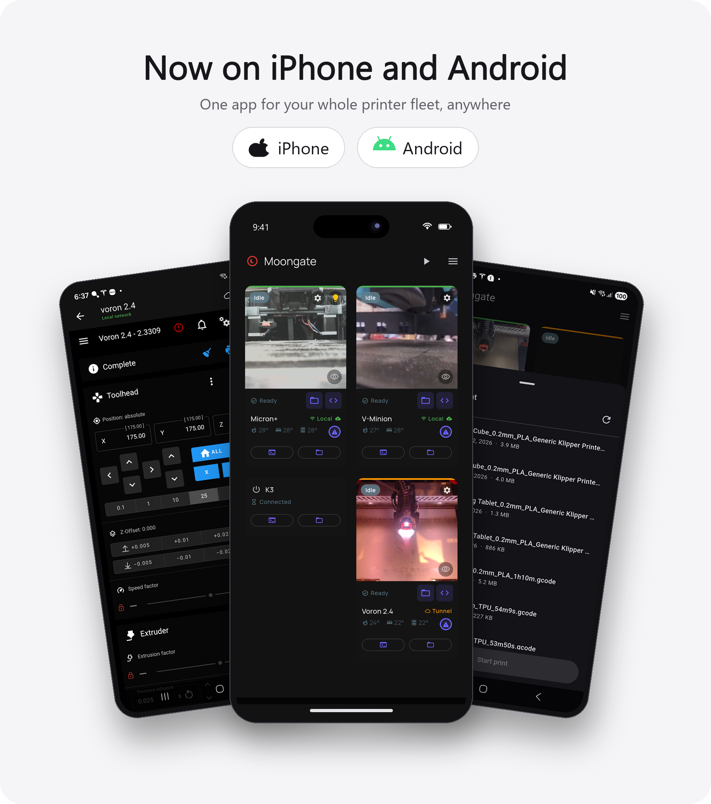
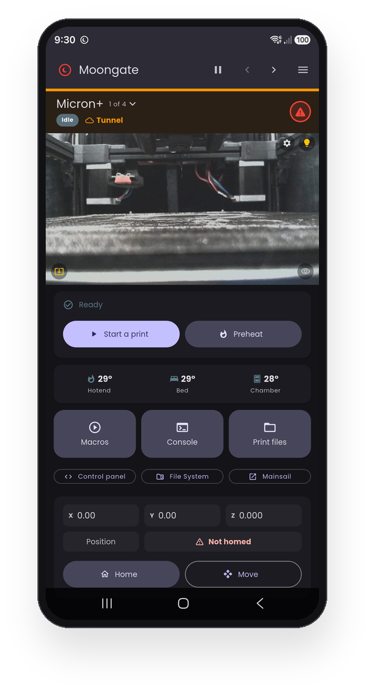
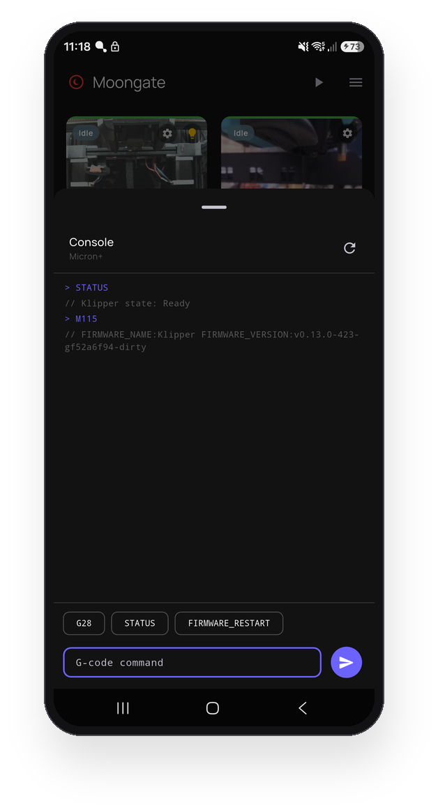
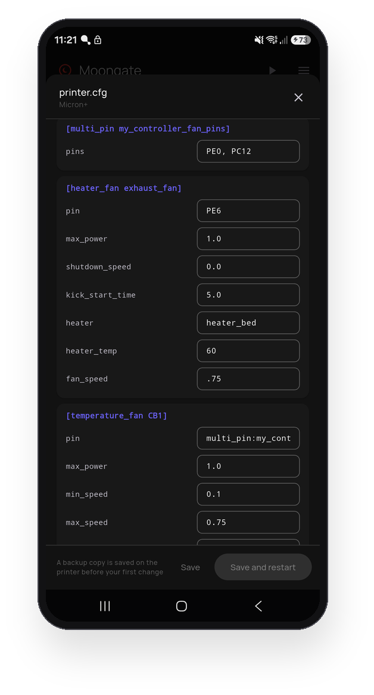

Moongate
One app. Your Klipper printer. Anywhere.
Free, source-available iPhone and Android control for your Klipper 3D printer. Live webcam, print controls, temperatures and the complete Mainsail/Fluidd UI, over home WiFi and automatically over the internet when you are away. Zero setup, no port forwarding, no subscriptions.
The stores carry the stable releases. The GitHub APK is the early-access channel: every release lands there first and it updates itself in-app.

The single-printer dashboard
Rather see one printer at a time? Tick Single-printer dashboard under menu → Dashboard Layout, and the whole screen becomes one machine.
- A header that stays put while you scroll, with the Local / Tunnel colour, the print state and the double-tap emergency stop.
- The camera, the print job with pause and stop, or Start a print and Preheat when it is idle.
- Big Macros, Console and Print files buttons, with the control panel, file system and the full Mainsail / Fluidd page beneath them.
- Live X Y Z position, homed axes and a Home button.
- Arrows beside the menu step through your printers in your own order, and rotating the phone splits it into camera left, controls right.
A fresh install simply asks "one printer or several?" after the language. Untick it any time to go back to the tile grid, now called the Multi-printer dashboard.

Everything your printer does, in your pocket
Built for a whole fleet, and just as happy with one machine.
📊 Fleet dashboard
Live webcam thumbnails, print progress with the time left right on the tile, temperatures and a status badge for every printer. Tiles sort themselves by activity, or drag them into your own order. Hide a camera to shrink a tile to a compact one.
📱 Single-printer dashboard
One printer, full screen: camera, job, temperatures, big Macros / Console / Print files buttons and the live X Y Z position. Step between printers with the arrows beside the menu.
v0.9.69🖥️ The full Mainsail / Fluidd UI
Tap a tile for the complete web interface in-app, whichever you run, auto-detected. Every printer's page is warmed in the background from launch, so even the first open is instant. A big difference over the tunnel.
📡 Automatic local ↔ remote
Home WiFi first on every poll, falling back to the secure tunnel within about two seconds when you are away, and back to Local the moment you are home. Printers that are switched off cost almost nothing in the background.
🎚️ Control panel
A panel you arrange per printer: temperature, motion and macro modules you can add, reorder, rename and recolour. Turn any Klipper macro into a labelled button with its own icon, colour and parameters.
🛠️ Console & config editor
The live G-code console as an overlay, with history, quick-command chips and completions. Plus a structured printer.cfg editor that keeps your comments and layout, backs up before the first change, and restores in one tap if Klipper does not come back.
📷 Cameras, including go2rtc
Cameras configured in Mainsail are auto-detected, including go2rtc / WebRTC feeds. Point a tile at an external camera too. Full-screen view runs at the camera's full frame rate with pinch-to-zoom, and keeps working when you are away.
🧰 Multi-toolhead & tool changers
IDEX and tool-changer printers (klipper-toolchanger, StealthChanger) show every hotend as its own T0 / T1 chip with the active tool highlighted, and preheat sets them all at once.
🔔 Print notifications
Opt-in live fleet status with start, finish, pause and error alerts, and the reason when Klipper errors out. The printer itself can watch temperatures: preheat and soak, then start the print on its own, or tell you when the bed is cool enough to remove the part.
📂 Print without a slicer
Browse the G-code already on the printer with slicer thumbnails, newest first. Pick one, confirm, and it prints. No re-upload.
🎛️ Power, lighting & e-stop
Pause, resume and stop from the tile, a double-tap emergency stop on every online printer, and one-tap firmware restart. Drive a Moonraker power device or your own power macro, even while the printer is off, and switch the lights with the bulb on the camera.
🎨 Yours to restyle
Light, Dark or fully custom colours, Material You on Android 12+, your own dashboard background, a 36-font picker, a 1-3 column grid and optional landscape. Nine languages, and an optional PIN plus biometric app lock.
A look around






Three steps, about five minutes
You need a Raspberry Pi running Klipper, Moonraker and Mainsail or Fluidd.
Install the Pi plugin
SSH into your Pi and run the installer. It asks how your phone should connect, then sets everything up and restarts Moonraker.
Future updates appear in Mainsail → Software Updates → Moongate.
Install the app
Get it from the App Store or Google Play.
Want every release the day it ships? Take the APK instead. It is signed with the same key, so you can move between the two later without losing your printers.
Pair
Run MOONGATE_PAIR in the Klipper console, open http://<your-pi-ip>/moongate-pair.html on a device on the same WiFi, then tap + → Scan QR in the app.
No camera? Type the GATE-XXXX-XXXX code from the console instead.
curl -fsSL https://raw.githubusercontent.com/PEEKYPAUL/Moongate/master/klipper-plugin/install.sh | bash
Scanning the QR is the fast path. It hands the app your Pi's local address directly, so the printer is on your dashboard in about a second while remote access keeps building in the background. A GATE code has no local hand-off, so it waits for the tunnel first, usually under a minute.
Pairing is LAN-only by design: nothing to port-forward, no URL to share. Full detail in the setup guide, including a custom HTTP port, LAN-only installs and 3rd-party printers.
Two ways to connect, mixed freely
Every printer gets its own choice, and you can switch one over any time from its edit dialog, with no re-pairing.
| ☁️ Moongate cloud (default) | 🔌 Direct (LAN/VPN) | |
|---|---|---|
| Setup | Pair once with the QR or GATE code | Pick Direct when the installer asks, add by QR or address |
| Away from home | Automatic, secure tunnel, zero config | Through your own VPN (WireGuard, Tailscale) |
| Print notifications | Yes | No, there is no cloud to send them |
| What touches the cloud | Pairing, a heartbeat, short-lived tokens | Nothing. Zero calls, ever |
| Needs internet | To pair, and for the tunnel | Never. Works fully offline |
| Best for | Most people. It just works | VPN owners, isolated networks, zero-cloud setups |
Direct mode is not picky about the host either. From plugin 0.6.17 it needs zero extra Python packages, so machines that were never a Raspberry Pi, embedded boards and vendor printers on community firmware, can join the dashboard with a one-file install. See 3rd-party printer support.
Remote access without opening your network

Route 1 — Moongate cloud
Your Pi runs Klipper, Moonraker, the Moongate plugin and an auth proxy that gates everything reachable from the internet. A minimal access broker handles anonymous sign-in, no email and no password, and tracks the current tunnel URL. The app fetches a fresh signed token before each request, and tries home WiFi first, then the tunnel.
The headline: leaking the tunnel URL alone gives an attacker nothing. Every path through it returns 401 without revealing what is underneath.
Route 2 — Direct (LAN/VPN)
No broker, no tunnel, no heartbeats. The app talks straight to Moonraker on your network, or across your own VPN, gated by Moonraker's trusted_clients, exactly like Mainsail in a desktop browser. The Pi makes zero outbound calls and the whole thing works with no internet at all.
Everything written down
| Setup guide | Installing the plugin and the app, pairing, custom ports, LAN-only installs |
| Updating & removing | Updating the app and plugin, moving to a new phone, full uninstall |
| 3rd-party printers | Direct mode on non-Pi hosts, the one-file install, supported machines, VPN notes |
| Troubleshooting | Offline tiles, tunnel issues, pairing failures, each with copy-paste diagnostics |
| Security | Threat model, what the tunnel does and does not expose, the empirical verification |
| Architecture | Code structure, state management, data-flow walkthroughs, design decisions |
| Development | Building from source, repo layout, debugging, release signing, CI |
| Changelog | Every release with a one-line summary of what changed and why |
| Privacy policy | What data the app handles and why. Anonymous, no analytics, no tracking, nothing sold |
Moongate is free, and stays free
Source available, built in my spare time for the Klipper community. No ads, no subscriptions, no data harvesting. If it has earned a spot on your phone, you can buy me a coffee to say thanks. Every contribution goes straight back in: test hardware, the cloud service that keeps remote access working, and the time to keep shipping features.
Thank you for being part of it 💜